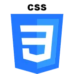
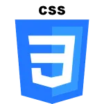

Profil
J'ai ans, lillois, dans un projet de reconversion j'aimerais me tourner vers le numérique et le développement, en utilisant mes expériences et diplômes passés, dans ce domaine tourné vers le futur.
Je suis passionné entre autre de musique, d'investissement, de numérique, et de lecture.
contacts
- (33) 06 59 10 21 66
- julien.cotte@live.fr
- 31 rue Abelard, appartement 1
- 59000 Lille
mes compétences
- HTML5 et CSS3
- Python
- Git
- Php
- Bootstrap
- Recherches google avancées
- furtivité
- Autonomie
 
